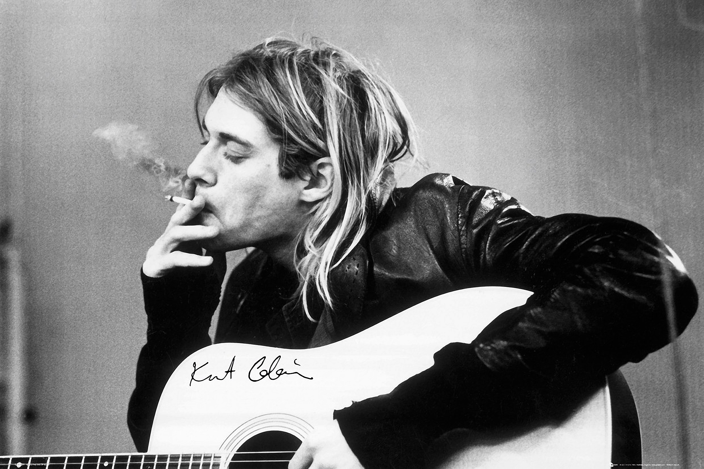
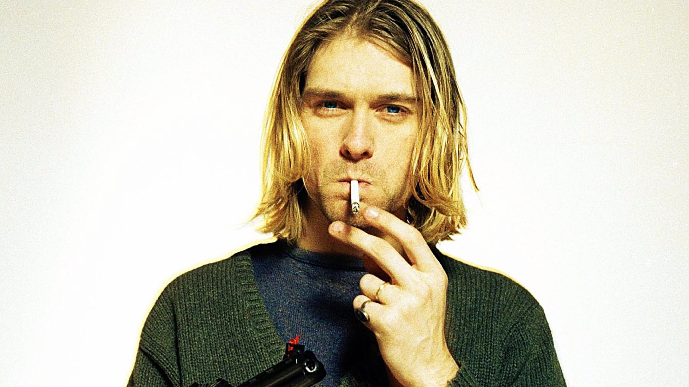

Kurt Cobain Tribute Page
Kurt Cobain


One of the best singer ever existed
Time Line Of Kurt Cobain's Life
- Born Kurt Donald Cobain on 20th Febuary 1967.
- Born at Grays Habor Community Hospital, Hoquiam, Washington USA.
- Parents Donald and Wendy Cobain.
- Moved to Aberdeen, Washington USA when 6 mths old.
- Sister born three years later, Kimberly Cobain.
- Attended Robert Gray Kindergarten.
- Attended Aberdeen Junior High School.
- In Year 8 he transferred to Miller Junior High School.
- In 1983 transferred to Aberdeen High School.
- Chris Novoselic and Kurt meet at Aberdeen High School.
- In 1986 Kurt recorded fortrack demo 'fecal matter' with Chris on bass and Aaron Burkhart on drums.
- 1988 Nirvana formed, group consisted of Kurt, Chris, Chad Channing and Jason Everman.
- 1988 Nirvana signed to Seattle label 'Subpop'.
- Lovebuzz - Big Cheese released as a limited edition of 1000.
- Nirvana recorded Bleach Bleach - CD-Albumfor only $600 in 1988, and was released on 'Subpop' in 1989.
- In 1989 Jason Everman left Nirvana.
- In 1990 Chad Channing left the band, and a Nirvana tour US with dale Crover on drums.
- Sliver was released in 1990 with Mudhoneys Dan Peters on drums.
- Dave Grohl joins in 1990.
- They signed to Geffen Records in 1990.
- 1991 Nevermind Nevermind - Japan - Vinyl-Album Nevermind - CD-Album Nevermind - Vinyl-Albumwas released.
- 24th Febuary,1992 Kurt married Courney Love.
- Frances Bean was born on the 18th August 1992, 3 weeks premature.
- Late 1992 Incestocide was released.
- Utero was released in 1993.
- April 5th 1994 Kurt died, found dead April 8th 1994.
Learn more about this great singer on his
Wikipedia entry